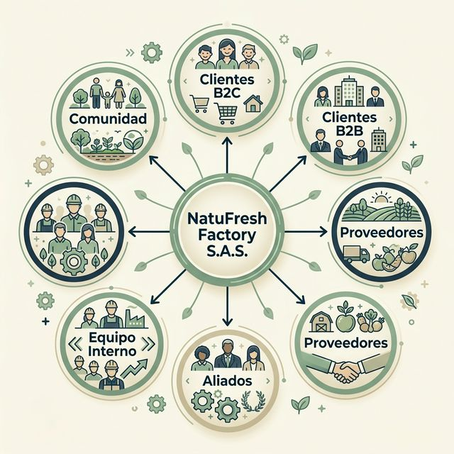

Públicos de Interés
Identificación, necesidades, canales y mapa de stakeholders clave para NatuFresh Factory S.A.S.
Nuestros Públicos
Seis grupos de interés que rodean y definen la operación de NatuFresh Factory S.A.S.
Clientes B2C
Hogares de estratos 3–4 en Bogotá D.C. que buscan alternativas de aseo ecológicas, biodegradables y económicas para su vida cotidiana.
Clientes B2B
Restaurantes, hoteles, tiendas eco-amigables y supermercados de cadena que adquieren el jabón en volumen para su operación diaria.
Proveedores
Empresas de recolección de aceite vegetal usado, distribuidores de sosa cáustica, empaques kraft sostenibles y frascas de vidrio reciclado.
Aliados
ONG ambientales, Alcaldía de Bogotá (Economía Circular Ley 2234/2022), universidades, y colectivos como Bogotá Recicla que validan y difunden nuestra misión.
Equipo Interno
Emprendedores fundadores, operarios de producción, responsable de logística y equipo de ventas digital que mantienen el proceso de 8 etapas funcionando.
Comunidad
Ciudadanos bogotanos, juntas de acción comunal y vecinos de barrio que se benefician de la reducción de aceite vertido en alcantarillas y la mejora de la calidad hídrica.
Necesidades y Canales por Público
Cómo atendemos a cada grupo, por qué canal y con qué frecuencia.
| Público | Qué Necesita | Canal Preferido | Frecuencia |
|---|---|---|---|
| Clientes B2C | Jabón económico, biodegradable y de fácil adquisición para el hogar. | WhatsApp / Instagram | Diaria — publicaciones + respuesta en < 2 h |
| Clientes B2B | Fichas técnicas, volumen de compra mínimo, certificaciones y precio por unidad escalonado. | Email / Visita comercial | Semanal — seguimiento de cotizaciones |
| Proveedores | Planificación de demanda de aceite usado, precios de barril y condiciones de entrega. | Llamada / WhatsApp | Quincenal — pedidos programados de insumos |
| Aliados | Informes de impacto ambiental, colaboración en campañas educativas y datos de litros de aceite recolectado. | Redes + Reuniones virtuales | Mensual — reportes e iniciativas conjuntas |
| Equipo Interno | Capacitación técnica, protocolos de producción, retroalimentación y motivación del talento humano. | Reuniones presenciales | Semanal — briefings de producción y metas |
| Comunidad | Información clara sobre los puntos de recolección de aceite y el impacto positivo en el agua del barrio. | Volantes / Redes locales | Mensual — jornadas de sensibilización |
Evidencia de Consultas Reales
Registros reales de interacción con clientes y aliados que validan las necesidades identificadas.
Consulta de Hogar: Precio y Disponibilidad
Consulta B2B: Pedido a Mayor y Ficha Técnica
Mapa de Stakeholders
Diagrama radial que muestra las relaciones entre NatuFresh Factory S.A.S. y sus seis grupos de interés.

Los seis grupos están conectados bidireccionalmente con NatuFresh Factory, generando flujos de valor, información y responsabilidad ambiental en la cadena circular.
"Conocer profundamente a cada uno de nuestros públicos no es solo una práctica de marketing: es el compromiso ético de construir una empresa que genera valor real para cada persona, empresa y comunidad que toca."